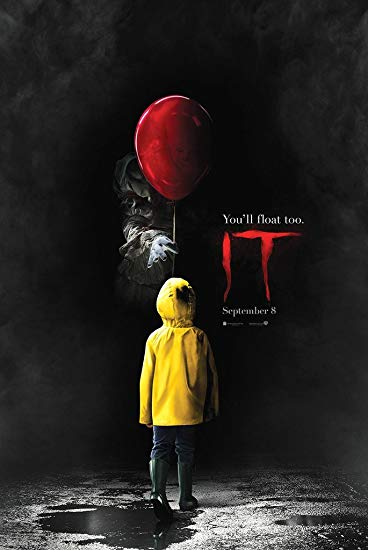
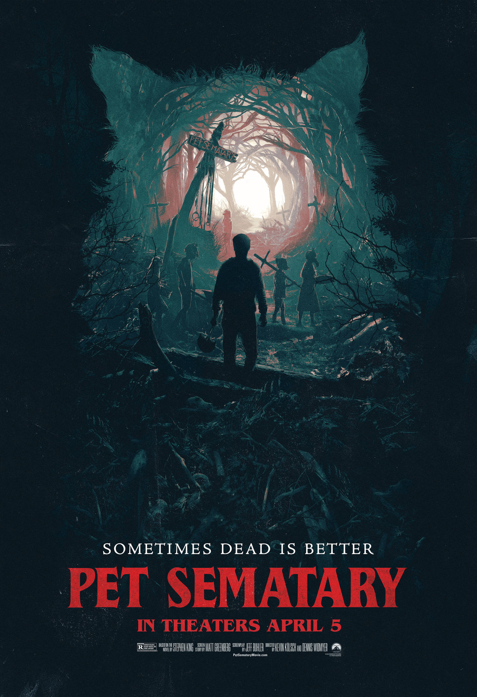
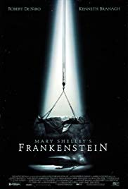

| 1. IT |
|  |
|
Written by Stephan King (1986) & Directed Andrés Muschietti (2017)
Language: English
Pages: 1138
Publisher: Scribner; Media Tie In edition (July 11, 2017)- republished
Amazon Best Sellers Rank:
- #5,348 in Books (See Top 100 in Books)
- #275 in Coming of Age Fiction (Books)
- #31 in Werewolf & Shifter Thrillers
- #441 in Horror Literature & Fiction
Sypnosis: They were seven teenagers when they first stumbled upon the horror. Now they are grown-up men and women who have gone out into the big world to gain success and happiness. But the promise they made twenty-eight years ago calls them reunite in the same place where, as teenagers, they battled an evil creature that preyed on the city’s children. Now, children are being murdered again and their repressed memories of that terrifying summer return as they prepare to once again battle the monster lurking in Derry’s sewers.
|
| 2. PET SEMATARY |
|  |
|
Written by Stephan King (1983) & Directed by Kevin Kölsch; Dennis Widmyer (2019)
Language: English
Pages: 374
Publisher: Doubleday (1983)
Amazon Best Sellers Rank:
- #412,517 in Books (See Top 100 in Books)
- #15817 in Horror Literature & Fiction
Sypnosis:" Now, he has to find a way to stop his son before he kills the whole town. Pet Sematary (PS) is a 1989 horror flick based on Stephen King's novel of the same name. After moving into their new home, the Creed family's cat is killed after wandering onto the highway. ... The docile cat is now vicious and destructive.
|
| 3. FRANKENSTEIN |
|  |
|
Written by Mary shelly & Directed by Kenneth Branagh(1994)
Language: English
Pages: 280
Publisher: CreateSpace Independent Publishing Platform (November 25, 2017)-republished
Sypnosis: about the young student of science Victor Frankenstein, who creates a grotesque but sentient creature in an unorthodox scientific experiment. Shelley started writing the story when she was eighteen, and the novel was published when she was twenty. The first edition was published anonymously in London in 1818. Shelley's name appears on the second edition, published in France in 1823. Shelley had travelled through Europe in 1814, journeying along the river Rhine in Germany with a stop in Gernsheim which is just 17 km (10 mi) away from Frankenstein Castle, where two centuries before an alchemist was engaged in experiments. Later, she travelled in the region of Geneva (Switzerland)—where much of the story takes place—and the topics of galvanism and other similar occult ideas were themes of conversation among her companions, particularly her lover and future husband, Percy Shelley. Mary, Percy, Lord Byron, and John Polidori decided to have a competition to see who could write the best horror story. After thinking for days, Shelley dreamt about a scientist who created life and was horrified by what he had made; her dream later evolved into the story within the novel.
|